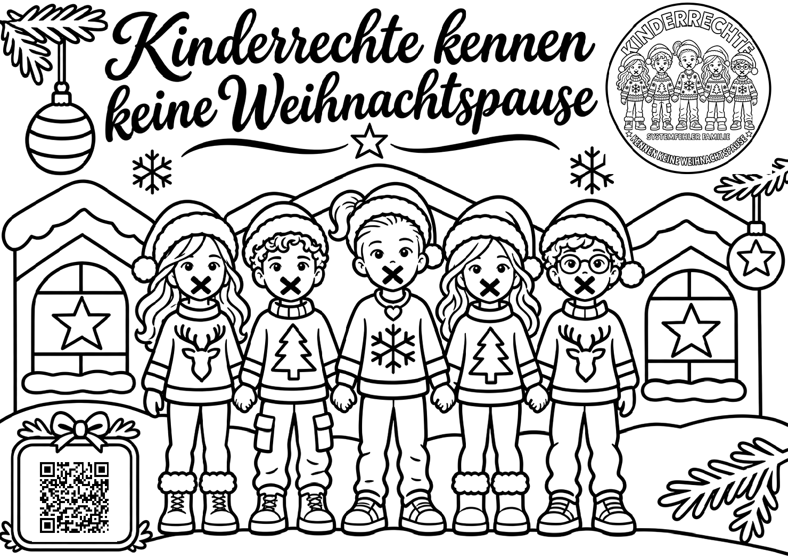

Eine Postkartenaktion zum Mitmachen
Kinderrechte kennen keine Weihnachtspause.
Mit dieser Postkartenaktion machen wir auf Kinder und Familien aufmerksam, die Weihnachten getrennt verbringen, und auf Einschränkungen ihrer Kontakte. Wir wollen, dass Verantwortliche hinschauen, Entscheidungen überprüfen und Kinder und Eltern hören.
Gestaltet hier eure eigene Weihnachtskarte an Politik, Aufsicht, Kinderrechtsorganisationen oder Medien: Motiv, Text und Empfänger auswählen, eine persönliche Botschaft ergänzen, die kostenlose PDF ausdrucken und die Karte frankiert verschicken. Ihr könnt auch eine eigene Adresse eintragen.
Eine Postkarte kostet 0,95 € Porto innerhalb Deutschlands und 1,25 € ins Ausland – auch nach Straßburg. Stand: November 2026.
Meine Postkarte gestaltenDeine Postkarte. Deine Stimme.
Wähle Motiv, Text und Empfänger. Ergänze deine eigene Botschaft und lade deine Druckdatei herunter.
Mit einer Briefmarke Aufmerksamkeit schaffen
Eine Postkarte kostet innerhalb Deutschlands derzeit 0,95 € Porto, international 1,25 €. Stand November 2026. Für den Versand als Postkarte nennt die Deutsche Post ein Papierflächengewicht von 150 bis 500 g/m². Das Auslandsporto gilt auch für Straßburg in Frankreich. Ein Standardbrief ins Ausland bis 20 Gramm kostet bei Einhaltung der Standardmaße ebenfalls 1,25 €. Bei anderen Briefgrößen und Gewichten gelten andere Preise.
Aktuelle Inlandspreise · Auslandsporto prüfen
Auch Unternehmen können Karten verschicken, Briefmarken bereitstellen und den Aufruf weitergeben. Portokosten können bei betrieblicher Veranlassung als Betriebsausgaben berücksichtigt werden. Ob das im Einzelfall zutrifft, sollte das Unternehmen steuerlich prüfen lassen.
Adressen und Druckhilfe
Die Auswahl enthält die 49 Empfänger der bereitgestellten Liste. Du kannst jede Anschrift vor dem PDF-Download bearbeiten.
Postanschriften als PDFDruckanleitung herunterladenAusmalen und Kinderrechte entdecken

Druckt ein paar Bilder aus und legt sie mit Erlaubnis in Geschäften, Praxen oder anderen passenden Orten aus. Kinder können sie ausmalen und dabei über ihre Rechte sprechen. Den QR-Code und seinen weißen Rand frei lassen.
Ausmalbild auf A4 herunterladenAusmalpostkarte als PDF herunterladenKinder haben ein Recht darauf, gehört zu werden. Die Kinderrechtskonvention schützt das Zusammenleben mit den Eltern und den regelmäßigen Kontakt bei einer Trennung. Eine Trennung gegen den Willen der Eltern setzt voraus, dass sie zum Wohl des Kindes notwendig ist und gerichtlich überprüft werden kann.
Kennt eure Rechte – UN-KinderrechtskonventionDie Aktion weitergeben
Teilt den Link oder den QR-Code mit Menschen und Unternehmen, die unsere Aktion unterstützen könnten.

systemfehlerfamilie.de/postkartenaktion/
QR-Code herunterladen